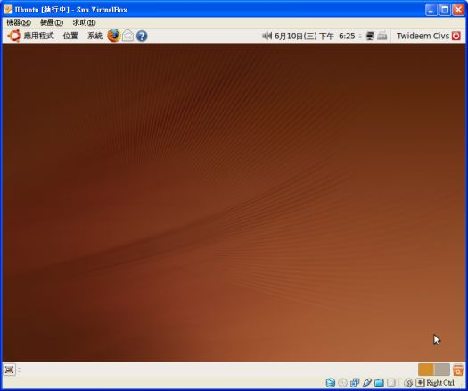
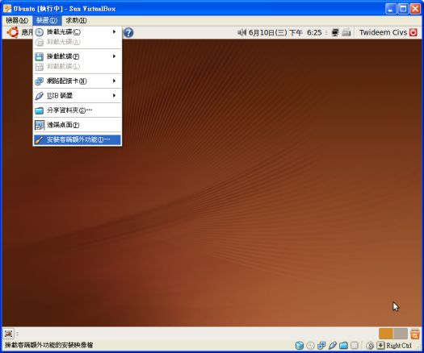
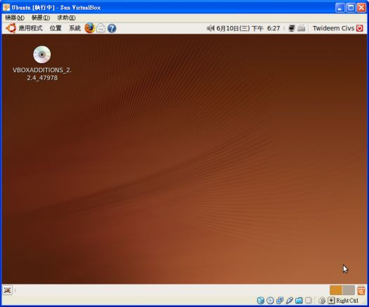
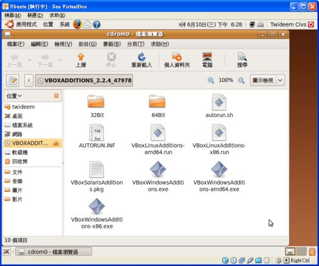
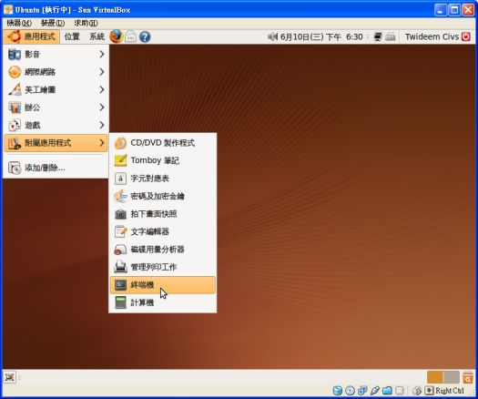
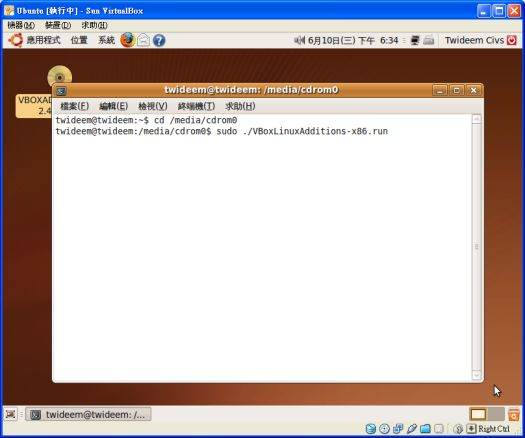
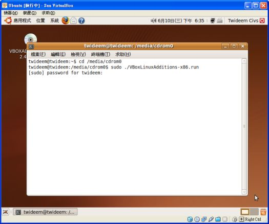
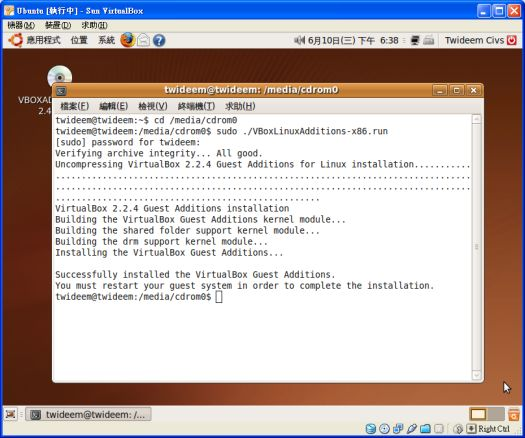

在 VirtualBox 裡的 Ubuntu 安裝「客戶端額外功能」
有些人在嘗試 VirtualBox 時，忽略了應該隨即安裝「客戶端額外功能」，以致於無法正常使用 1024x768 的全螢幕、或者無法在虛擬的 Linux 裡面分享 Windows 的資料夾……等等之類，結果誤以為這軟體不好用就給移除了，相當可惜。
本文將為從未學過 Linux 的人，示範如何在 Ubuntu 安裝「客戶端額外功能」。
安裝客戶端額外功能
步驟一
首先在 VirtualBox 啟動 Ubuntu，確認進入的是使用者的桌面，而不是訪客 (guest) 的桌面，這樣才有系統管理者的權限安裝程式：

右上角會顯示用戶的名稱，例如這張圖顯示 Twideem Civs。
步驟二
接下來請執行 VirtualBox 功能表的「裝置」→「安裝客戶端額外功能」：

步驟三
稍待片刻，讓 VirtualBox 將所需要的安裝檔案，以光碟映像檔的方式掛載於光碟機，讓你就像放入光碟片一樣，裡面有需要的安裝程式。掛載這片看不見的光碟後，桌面會自動顯示光碟機圖示：

步驟四
我們可以「用 Windows 的習慣」看看這光碟片裡面有哪些東西：

之所以刻意括號，是因為在 Linux 有使用權限的問題，一般安裝程式幾乎都無法用「點兩下圖示」的 Windows 習慣方式來順利完成動作。[1]
但是起碼打開視窗後，可以方便看清楚我們需要的安裝檔案叫「VBoxLinuxAdditionals-x86.run」，接下來我們要使用「終端機」以輸入指令的方式啟動這個檔案。
步驟五
要進入「終端機」，請執行 Ubuntu 的「應用程式」→「附屬應用程式」→「終端機」：

步驟六
現在要以下達指令的方式在終端機啟動光碟片裡面的安裝程式，請依照以下動作完成。
首先要以下達指令的方式在終端機「開啟光碟機的資料夾」，請輸入：
cd /media/cdrom0
輸入完畢按 Enter，指令執行正確的話，指令列會看到 $ 符號的前面顯示光碟機的路徑，表示已經順利進入光碟機。 (不是那樣順利的話，請自行研究問題出在哪。)
緊接著要執行光碟片裡面的「VBoxLinuxAdditionals-x86.run」，請輸入：
sudo ./VBoxLinuxAdditions-x86.run
或者以偷懶的寫法輸入：[2]
sudo ./*x86.run
如圖：

步驟七
剛剛指令有寫到 sudo 這樣的東西，這指令表示想要以系統管理員的權限來操作系統，因此接下來會詢問你系統管理員密碼。在 Ubuntu 則輸入自己的用戶密碼即可獲得系統管理員權限：

步驟八
終於順利展開安裝程式，請耐心等候。在虛擬系統執行程式本來就很慢，所以並不是當機。完成所有安裝動作後，畫面如下，請比對看看確認一下：

步驟九
最後！必須重新啟動 Ubuntu，「安裝客戶端額外功能」的安裝就全部完成了。
安裝了這些東西，就能夠享受 VirtualBox 精心規劃的許多人性化操作！
尤其是「分享資料夾」的功能，先在 Windows 作業系統指定想要讓 Linux 可以存取的資料夾，然後在虛擬的 Ubuntu 裡面，以 vboxsf 這樣的磁碟格式將資料夾掛載進去，超級好用。